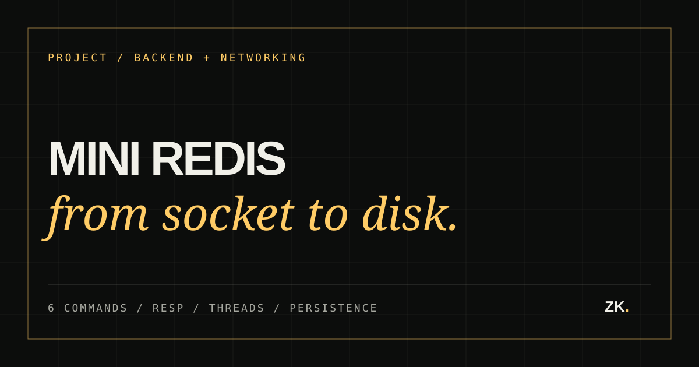

Project / 02
Mini Redis Server
Problem / Why I built it
Why I built it
Redis looks simple from a client: send a command and receive a response. I built a minimal compatible server to understand the socket lifecycle, protocol boundary, shared state, and persistence behind that interaction.
- Role
- Author
- Dates
- 2025–2026
- Stack
- C++17 · POSIX sockets · RESP · multithreading
- Status
- Maintained
- Verified
- 6 supported commands
- Repository
- View repository ↗
A deliberately small Redis-compatible C++ server that accepts RESP commands over POSIX TCP sockets, stores strings in memory, coordinates clients with threads and a mutex, and persists data to disk.

Architecture / Request path
How the pieces connect.
- 01TCP client
- 02RESP parser
- 03Command handler
- 04Locked database
- 05Disk file
02 / Design
System shape
The implementation is divided into four responsibilities. Server accepts clients, Resp translates network messages, CommandHandler validates operations, and Database owns the synchronized unordered_map plus persistence. main only wires those pieces together.
03 / Implementation
What the code actually does
- 01
POSIX socket, bind, listen, accept, receive, and send flow
- 02
RESP parsing and Redis-compatible response encoding
- 03
PING, SET, GET, DEL, KEYS *, and SAVE commands
- 04
One worker thread per client with a mutex protecting shared data
- 05
Startup loading plus automatic persistence after SET and DEL
04 / Decisions
Engineering choices
Keep the scope readable
The server stores strings only and intentionally avoids reproducing Redis as a whole. That keeps the networking and protocol path understandable end to end.
Give each layer one job
Protocol parsing, command selection, storage, and socket management live in separate classes, so each can change without rewriting the others.
Persist visible state
Saving after mutations makes restart behavior easy to demonstrate and gave the maze visualizer a dependable external store.
Concrete outcomes
- 01
- 6 Redis commands
- 02
- 4 separated layers
- 03
- Automatic persistence
Development evidence
Follow a request through the code.
Next iteration
Add buffered RESP parsing, expiry support, richer data types, and an event-driven connection model while preserving the current readable architecture.
What I learned
A protocol is a contract.
- A protocol is a contract between independent programs, not merely a parsing format.
- Shared in-memory state becomes a concurrency problem as soon as multiple clients can connect.
- The current full-command-per-read assumption is intentionally simple and marks the boundary for a buffered parser.